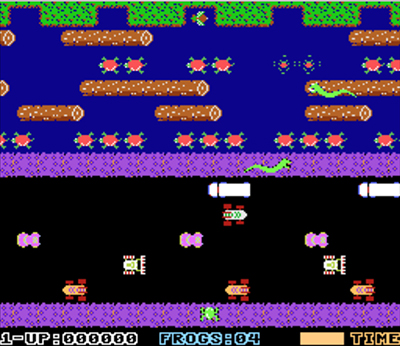

Display: what the heck does this do?
Inline vs Inline-block (vs Block)
10/19/14
Getting you content and containers to layout just how you'd like them to isn't always strightforward. Today I'll break down one aspect of laying out your content with the display property.
There are three main display properties to know: inline, inline-block, and block. A block-level element has a definable width and height and are displayed on their own line. Think of block displayed elements like the subway rider...
Git, kinda like Frogger
Hop forward, hop back
10/12/14
If you've seen the 90's movie PCU, you might remember the scene where the accident-prone protagonist trips on the computer lab's power cord and shuts off everyone's computer mid-thesis. This wouldn't be the best way to make friends in college, or the workplace. And let's be honest, people forget to save their docs. But, saving documents and projects is a lot easier these days. Word attempts to auto-recover your last unsaved version, Google Docs is always saving, your programs have gotten smarter. In the world of code, git & GitHub are popular ways to powerfully manage and save versions and revisions to your code. Similar to Time Machine on macs, git let's you step back to previous versions of files and when combined with GitHub, you can easily share and non-destructively work on the same files with other people... MORE
DBC Culture
Learning together
10/12/14
I was drawn to Dev Bootcamp because of their holistic approach. It reminds me of west coast culture! I'm looking forward to attending an intense program with this supportive environment. We're all cooking in the kitchen together, but this ain't Hell's Kitchen!